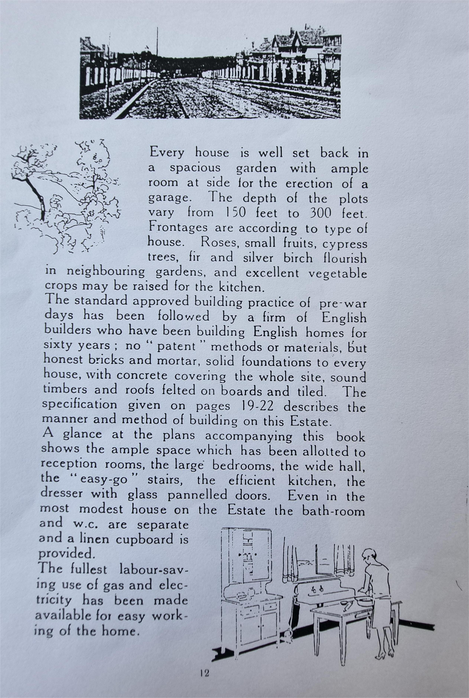
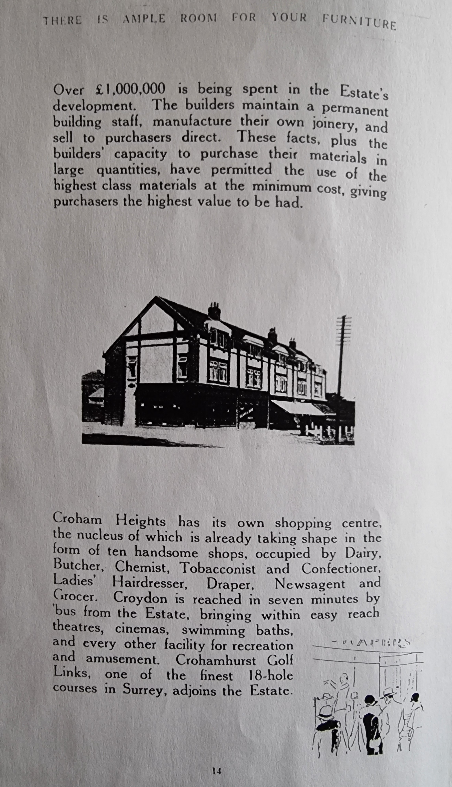
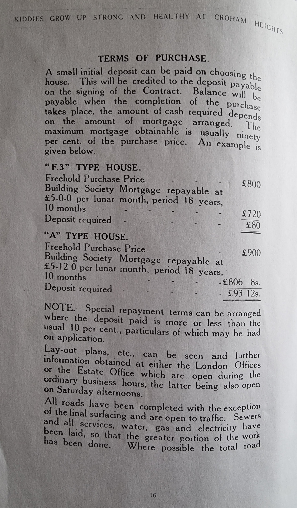
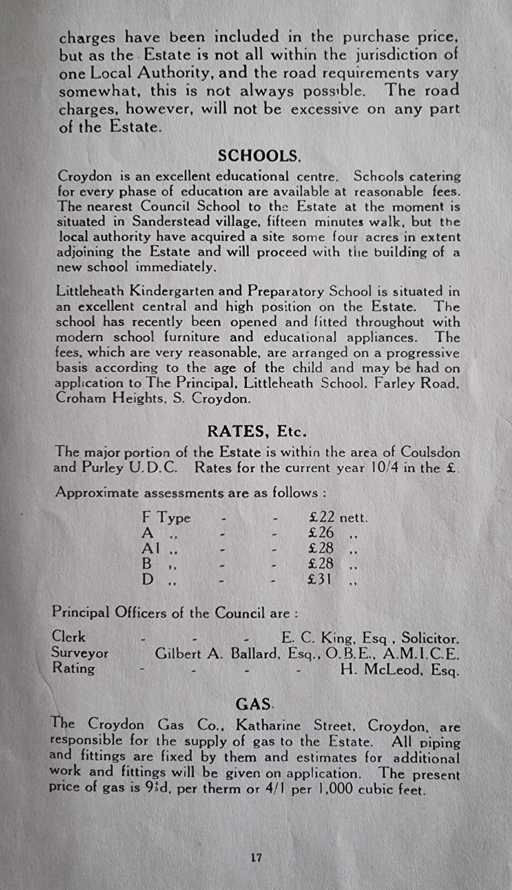
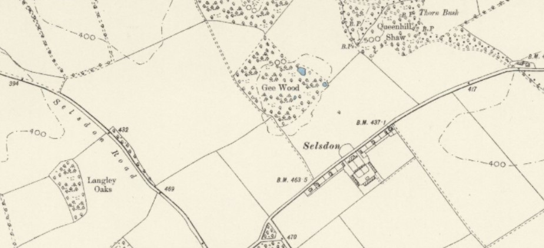

Croham Heights, South Croydon, Surrey; Two housing estate brochures from 1920s
Scanned form loose pages of Eric & Joyce Soper, who moved to a semi-detached at 97 Croham Valley Road, after their marriage in 1950s and lived there until they were about 97 (so perhaps brochure health claims, including "complete recovery from serious illness" true?).
Regret some pages of pamplet 2 are missing. I don't see these pamphlets yet on www (in 2025)), so worth publishing here, despite being incomplete. If anyone can send the missing pages, , & I can add pages.
Marketed first as Selsdon Garden Village and later as Croham Heights, South Croydon (with Selsdon not mentioned in addresses)
There were 2 booklets for Croham Heights below
Booklet 1; 1926; Cover shows 1st batch of 250 houses extending down Farley Road built; (Booklet 2, printed Jan 1928).page 0b Cover Page & page 0b cover advert.
pages 1b Contents & 2b advert.
pages 3b & 4b advert.
pages 5b & 6b.
pages 7b & 8b.
pages 9b & 10b advert.
page 11b (so the flat trapizoid field was planned to be more tennis courts before it was planted as woodland); & page 12b advert.
pages 13b & 14b advert.
pages 15b & 16b.
pages 17b & 18b.
page 19b; (Costain's bitumin damp course seems be lasted well after 100 years; more than I can say for my 50y old home); & page 20b advert.
page 21b; 'hard bricks' used. Bricks used in upper part of Croham Valley Rd can blunt any drill & chisels drew sparks; Was told it contained iron slag from coal power stations?; Mobile signals have hard time breaking through; & page 22b advert.
age 23b : [was told the wood was from Norway?; resin escape gave paint problems when white gloss replaced distemper after a few decades, but seems to have kept it good as new, 100 years later]; & page 24b advert.
page 25b & page 26b (so was 'model A' with dormer windows & door on front?.
pages 27b & 28bpage 29; Initial estate plan; much modified during estate construction
- Extra roads were added, to increase housing density; (A) Ruffets Close, (B) Ballards Rise & (C) Brent Road.
- Littleheath Woods were not built over as planned (I) (but the stub of the access road into Foxearth Rd still exists as a footpath into the woods (H)
- A path joined Littleheath Woods to Croham Hurst golf course but was built over, the short stub (E) parallel to Croham Valley Rd remains (Interesting that this current track though Littleheath Woods (M) predates everything around it)
- The path into Littleheath Woods from Croham Valley Rd, used to extend to Ballards dairy farm but was lost after Crest Rd built (F);
- The lost 18 hole miniature golf course is now 'Queenhill Rd Playspace' (G) (p.15 shows it in use); Acquired by Croydon 1936 see; the 3 court tennis club and clubhouse in front
- Croham Valley Road temporarily planned to stop at Crest Rd (D); Croham Valley Rd was designed wider than Farley Rd (J) so seemed intended to be the main road before access across to Monk's Hill was blocked; [think I was told, Farley Rd was widened later, losing its trees & verges?];
- The original tracks to the dairy farm remained after Croham Valley Rd was built (K)
- Seems the steep path by The Village Club was intended to be drive leading to 2 house plots? (P)
- Selsdon Farm's plot is Aldi (L);
- Perhaps the estate's entry arch in the opening film above was junction of Queenhill & Byron Roads? (N); .
pages 30b & 31b.
page 32b & end cover 33b advertend cover 34b advert
Chart of Croham Heights area with bus route; perhaps a loose leaf in Booklet 1?; Not from Booklet 2, as 2nd direct bus route ran down Croham Valley Rd to S.Croydon by 1928;
Shows Crest Rd joining to Littleheath Rd (nor footpath)
Chart of nr.54 bus route from Selsdon to East Croydon; via Selsdon Rd, Lismore Rd, Normanton Rd, Croham Rd, Swan & Sugerloaf & S.Croydon; Pamphlet claims a 7 minute bus ride; Kathleen Starr, resident since 1927 said "not uncommon for the Estate Bus passengers to dismount at Arkwright Rd [on Selsdon Rd] to help push it up the last steep bit by Houn Hoek*" pdf : [*Houn Hoek not on www; Standing behind a bus on a steep hill sounds epic]
Booklet 2 (printed January 1928, after Arundel Road houses had been built)
.
pages 5 & 7 (pages 2, 3, 4 & 6 missing).
pages 8 & 9; The scattered mature silver birches can still be seen 100 years later.
ages 10 & 11; The front garden white posts seem not to have lasted long.
In 1950s Croham Valley Rd, it was normal to still only use Costain's original 3 wires to separate back gardens, giving open views (& no privacy). A contrast that UK newbuilds are now always fenced, while US suburbs often insist on open bountries.
pages 12 & 13; Wonder how many homes on the estate are self-builds? Perhaps someone might hunt some down?page 14 : [First block of 5 Selsdon shops, in row of 10, built 1926 & 7]
Ten shops in 'The Broadway'; So just one wide road here at the start nr.1? Welfords Dairy (later United Dairy)*
nr.2? Hern's butcher*
nr.3 Henry Richards, Chemist (or Anderson's chemist?*)
nr.4 Worths, Post Office, "high class tobacconist & confectioners; teas & light refreshments provided; J Lyon speciatities"; (sweet shop, with Mrs Astington*) : [a lot to fit in a small sghop]
nr.5 'Maison Marion' ladies hairdressing (with Marion England*)
nr.? Norman's the baker
nr.? Butcher's the newsagent & Post Office* [perhaps nr.4?]
nr.? Nash's greengrocer*
nr.? Taylor's fish shop, selling fish & chips*
nr.? Howard's grocer* [*from E.Surrey Family History Soc. 2014; Kathleen Starr (1922-2014) Farley Rd from Sept.1927 pdf)]
.
page 15 (interesting that 'Croham Heights' was a part of house addresses); Is photo facing South to Ballards Ridge? If so, no buildings on Farley Rd. Perhaps the white is exposed chalk after topsoil stripped for Farley Road? (or perhaps the hill is Croham Hurst?)
page 16; "Roads completed with exception of final finish" from the 1926 film it looks like compacted chalk & gravel. The same in 1937 air photo, so seems tarmac was a long time coming.
page 17; Seems the estate's new road 'Ballards Way' & the council's surveyor Gilbert Ballard just a coincidence?; Here's a Ballards Farm air photo 1921 (when its address was Addington). In 16th Century, Ballards Farm 'largely shared half of Selsdon with Selsdon Farm' (on Selsdon Park Hotel's site) see; Ballards Farm yard was redeveloped for housing (some time after this 1950 map); Gilbert Alfred Ballard (1887-1953) Croydon Council's surveyor; was born 27 Aug 1887 in West Bromwich, Staffordshire & died 21 July 1953 in Coulsdon, age 65; Grantham Journal says "Surveyor of Grantham, 1920-7 & his 1936 address; 85 Woodcote Grove Rd, Coulsdon, Surrey"
& page 18.
page 19 & 20.
pages 21 & 22.
page 23 (pages 24 missing; Perhaps showing the £800 'F3' & £900 'A' house models?); & page 25.
page 26 & 27.
pages 28 & 29 (page 30 missing).
pages 31 & 32
1898 OS map; from National Library of Scotland A: Selsdon Farm was joined to Ballards Farm by track started at footpath opposite Iceland shop, following line of Littleheath Road to the current footpath to Crest Rd (seem clearer in a 1893 map); a 1903 map show it as a drivable track to S.Croydon via Ballards Farm Rd
B: Bridle path follows route of Vanguard Way through Littleheath Woods
C; Only the clock triangle is recognisable where Farley Road now starts
D; Wonder what the crescent in front of Selsdon Farm was for? Farm turning circle? Decorative? It's now Selsdon Crescent & Aldi; (a 1867 map shows it just a semi-circular orchard field surrounded by trees opposite the farm)
1925; from National Library of Scotland The narrow-guage railway Costains used to build Croham Heights; Seems photo show construction of Farley Rd, as behind are Ballards Plantation woods. Building visible is Woodside Cottage [see 'M' below]. Hopper trucks seem filled with chalk baserock; Air photos shows the estate's roads built on a bed of compacted chalk
From a lost ebay lot. As Littleheath Woods not visible on right it's partway downhill from Selsdon, perhaps near Queenhill Rd; Interesting title of "Costam's Croham Valley Heights Estate", Mistake for 'Costain' & seems estate name also mistake, as only mention visable links to this postcard by Pamlin Prints, active 1960s-80s wikimedia
1926; A 42sec long Pathe News film, issued 29 July 1926; titled "Honeymoon Village" Opening ;
"Lord Clwyd* as official Godfather inaugurates new suburb at Croham Heights". Crowd gathered around concrete arch at entrance to new housing estate. Confetti bucket released from bunting decorated arch. Car convoy decorated with ribbons drive through arch britishpathe.com : [Surrey 'Honeymoon Village', a sucessful marketing ploy; as when Eric and Joyce moved in, they knew several residents, including next-door neighbours; The Smiths at 95 (& I think, The Hawkings at 93?), who got a new-build semi as their wedding gift] :
: The arch photo (stills from the film), is at a T junction [from tyre marks]. By angled corner house. Has a short road sign, visible on left. Seems this is Brent Rd off Queenhill Rd, just in front of the tennis court entrance [can't match another of the estate's 9 junctions?]; g.map];
: The cristening cake photo shows 3 buildings along Farliegh Rd (the middle with white 1st story). With Littleheath Wood & park behind : [so this would be on the upper mini-golf course?] : The cake cutting photo has marquee behind, [so on tennis court area?]
L The crowd photo shows an uncompleted Farligh Rd semi : [showing no-scaffolding construction? & the Brent Rd old potato field (mentioned below) to Littleheath Woods [that part of the lower woods lost to Littleheath Rd housing]]
*Sir John Herbert Roberts (1863-1955), knighted 1908 when of Bryngwenallt, Denbigh; became Baron Dewar of Homestall, Sx, 1919; Welsh Liberal politician wiki, known as Sir Herbert Roberts, 1st Baronet from 1903-19
‘The Croydon & District Commons & Footpaths Preservation Society’ proposed “acquisition of Littleheath, Foxearth & Gee Woods together with wooded valley intervening & portion of adjoining parkland”. Public subscription raized 1/3 (£1,900), 1/3 Croydon & 1/3 Purley Councils; from Ian Leggatt, Selsdon Gazette, Oct 2018;' Costain's 1925 chart showed the planned [but didn't build a road off houses through Gee & Littleheath Woods] but G Costain contributed £25 to the fund to save wood
1926 Interesting that Costain didn't need to start advertising until after the estate opening, when 250 homes were nearly sold; 26 Aug 1926 Westminster Gazette : [the 1st advert visable in UK newspaper archive]
May 1929;
Part of an higher resolution air photo from historicengland.org.uk; Shows Croham Heights half-built;
A; Ballards Way (at top) has been built,
B; But Croham Valley Road after Farley Rd is a chalk area (a raized chalk bund as area can flood?) & is yet to join to Crest Road chalk roundations; Cow herd still grazing there, as part of Ballards Way dairy farm.
C; Ruffets Close, yet to be laid-out, near the hedgeline;
D; The estate had 3 simple churches; Anglican St Johns on far right (now its church hall, bombed WW2); Catholic St Columbia, center, in Queenhill Rd (now its church hall) & Selsdon Baptist on far left (now its rear hall); (Presbyterian St Pauls built 1901, just N of the estate)
E; The first 2 blocks of Selsdon shops; 'The Broadwalk' had been built by the cross road
F; Was my father wrong in remembering Farleigh Road losing its trees and hedges to road widening, as seems there were none here? But also perhaps no pavement yet? Byron Road next to it also seems bare, but now is matured tree avenue
G; Littleheath woodland has yet to be felled for the more difficult house plots in Littleheath Road.
F; The lost hedgeline tracks from Littleheath Woods to Croham Hurst & Littleheath to Ballards Farm has yet to be built-over;
G; The Ruffets circular clump of woodland is seen. Part of it survived the later redevelopment by Chapel View shops
H; Signs of the depressions in the Littleheath's fenced-off field 'Clears Croft' can still be seen in the grass of air photos. Perhaps ponds for cows? or chalk pits after the cows left? This field touched Littleheath Wood's other field, 'Fallen Oak Field', through a gate back then
I; Perhaps just 5 cars visible in photo, parked or driving? (In 1950s, my father had to prove to council he'd rented a garage before buying a Norbury house, as on-road parking was prohibited. So a Croham Heights garage was quite a draw. I think cars kept outside garages was still frowned on, unless for traditional weekend car-washing). Also surprising for May, no smoke visable?
J; Three courts at the tennis club, 2 more added later; by the 18 hole mini golf course's land (Selsdon Players performed at tennis club's pavilion from 1929*)
K; Kathleen Starr (1922-2014) at 127 Farley Rd from Sept.1927 said 'Once Farley Rd & Croham Valley Rd were cut, S.Croydon commuters no longer walked over fields'. [was that before she moved in? p.9 above mentions walk from Croham Rd up a Crohamhurst footpath (assume lost tio golf club?)] A private bus then started, to door with no bus stops, sold tickets from booth in 94 Farley Rd's front garden*. For a year no houses to Littleheath Woods, just poppies in old potato field, Unemployed laid gravel paths across the field to Littleheath Woods from entrance to Brent Rd, & Foxearth Rd; *from pdf : [too late for stock collapse Oct'29 starting 'Great Depression', so not resession jobs wiki]
L; Littleheath School at 66 Farley Rd*
M; The cul-de-sac top left is Ballard's Rise; above that is Woodside Cottage on Ballards Farm Rd, half way along track between Ballards Farm & what's now the base of Croham Valley Rd
O; Wonder why isolated inital development of 6 buildings in middle of Ballards Way' Perhaps showhouses?
** [p.9 above gives alternative bus; nr.54 E.Croydon, S.Croy, Swan & Sugerloaf, Croham Rd, Normanton Rd, Lismore Rd, & Selsdon Rd to the Estate; Brochure claims 7 minute bus ride; (route in map on top of page)]
1930 agressive advert; "Don't give your children a basin full of fog every morning this winter. Live at Croham Heights above the fog belt. The healthiest suburb within half an hour of the city [aggressive adverts back then; Was 30mins theoretically possible?]; built 6 to the acre, available with room for a garage; from £775, £800 & £900 semi-detached freeholds; from £37deposit; apply Richard Costains & Sons, Norfolk St, Strand, City"; Daily Sketch advert; For sale ebay £7.80 (2025)
1930s Opening of Croham Valley Rd; Assumed at start of Road joining Croham Rd?; (Odd; seems the bottom of C V Rd was 1st opened 1926 above? Perhaps re-opening for the last batch of houses in this area c1933/4?); (only possible identifiers, a roofline & a manhole cover, perhaps showing widened, still untarmaced road); Opened by Yvonne Arnaud, (French singer & actress; seems London based with no local connection?); Lived in Guildford & their theatre named after her wiki; from Croham Valley Residents' Ass; cvra.org.uk
June 1931; Part of higher resolution air photo from historicengland.org.uk shows Croham Heights almost completely built;
A; Area around St John's Church (Hall) not built-out until now, (Sylvans Close). [had road access from start, so odd not built 1st, had a graveyard once been considered?]
B; Houses on one side of Croham Valley Road between Farliegh Rd & Ballards Way not yet built (& Ballards Way gardens not yet laid-out?)
C; The missing 2 semis in Foxearth Road. So seem Costain's may not have completely given-up on driving their planned road of houses through Gee Wood (which was incorporated with Littleheath Wood behind it, & others. Hence the plural 'Littleheath Woods')
D; The 4 sided, trapezoid, (hay?) field mid left, by the estate's mini-golf course, was planted as woodland (Trees might screen the estate & its uncool mini-golf course from the proper golf course). Plans in 1926 for 30 more tennis courts, so assume here.
E; The land inside Croham Valley Rd, Crest Rd & Ballards Way do not yet have gardens, so are still being finished
F; The other side of Crest Road have gardens. At the end of the gardens, Ballards Farm (H) keeps the hedged track from entrance to Littleheath Woods (I), at least until the next cow pasture got developed
G; Rather grand tea rooms appears. Now 'Village Club', who bought 'Sanctuary Tea Rooms' & restaurant 1957 (across from Iceland) club history; "Selsdon called New Jerusalem of the borough, as had no drinking houses. Neighbouring Sanderstead has none to this day" : [wonder if baptists, across the footpath (J), involved in promoting tea, over beer?] Photo of it's roof 'c1926/7' on selsdon-residents K (right); 3 large houses on Ballards Rise built
K; Is that the garage, next to Selsdon's 1st 10 shops, to service all the new cars in house garages
L Doverton Rd houses visable bottom left, perhaps not yet with gardens?
M Estate's mini-golf & some tennis courts built
N Seems the odd little park opposite Littleheath's entrance, is owed to an enormous tree once there? : [image right of Foxearth Rd c1928, with the tree; image in selsdon-residents]
1932 Extension of Croham Heights; building started 1932; From Selsdon Residents Association's, Selsdon Gazette; Dec 2023, see; mail2.selsdonresidents@gmail.com;
Costains wanted to build 150 houses proposing 50 each of 3 styles & specification. The Council wanted more variety & eventually, in Dec.1931, planning granted for 108 houses of 4 house styles with 6 alternative specifications. The plan laid out Norfolk & Arundel Aves. Its convoluted arrangement constrained by 2 grand houses & topography. Arundel Ave accessed onto Upper Selsdon Rd & Norfolk Ave onto Church Way. Once again, the naming process lacked imagination: Costain's London offices at Arundel & Norfolk Sts. Langley Oaks Ave, not on drawing board at that stage.
Further 42 houses agreed later. New houses marketed as 'Croham Heights', making play on the elevation, leading to healthy living. Costains described their new venture thus:
60 years of building good homes, taught us to build them where people want to spend a lifetime. The beautiful Surrey hills on which the homes of Croham Heights st& were a favourite beauty spot for Londoners wanting to go afoot & awheel for their weekend ‘breather’. It is still a beauty spot, & bounded as it is by woodl&s & open heath & golf courses, it will remain so for the unending delight of those whose homes nestle on the hills. Typical English homes, these, in a typically English setting: mellow brick & timber, red roofed & fronted with wide walled gardens. It is a fact that doctors have little to do at Croham Heights except to bring in to the world a healthy generation of children who will inherit good homes. It is also a fact that people have settled at Croham Heights & rid themselves of chest weaknesses & other complaints that are aggravated by low-lying, damp residential districts..... The Sanderstead Woods form a fine background to this estate & fine views of Croham Hurst & golf links are obtained."
Building commenced in March 1932 with the further houses on what is now Langley Oaks Avenue receiving planning permission in March 1933. By the end of 1934 almost all the houses had been constructed. The 4 styles of house were: Elmwood, Ashwood, Oakwood & Teakwood with the cheapest Elmwood priced at £945. More of those later.....
1933 OS map; from National Library of Scotland A: Arundel Auenue and half of Norfolk Avenue has just been built
B; Show perhaps 23 Selsdon shops had been added to the intial 10, including a large food shop, that became Co-op & Wetherspoon pub
C; The much reduced 'Gee Wood' on South part of what's now called Littleheath Woods; 'Queenhill Shaw' wood & 'Littleheath Wood' all incorporated into 'Littleheath Woods' (plural, sometime after 1933)
D Selsdon Primary School site opened 1928 as temporary "tin school"; Current building built 1931 with Secondary School above
E Sanctuary Tea Rooms c1926/7 there; Now The Village Club from 1956
1935; I read the very short dual carriageway at the start of Croham Valley Rd was built in 1935. Seems surprisingly early for an isolated, surprisingly pointless, construction? But Croham Valley Rd was planned as an arterial road and it's extra-wide grass verges could allow 4 lanes. So perhaps it was planned to open-up development near Addington and perhaps join the London Ring Road? Wonder if the siding for Croham Valley Rd's builder's train was one part of the dual carriageway?
1935; Nearly half the houses in Croham Valley Rd have been visited by burglars in the past 4 years; Daily Express 11 Feb 1935
Dec 1936; Two of the last adverts Costain placed for Croham heights, so seems by Dec 1936, they'd built and sold their homes. They published over 38 sales adverts for Croham Heights, between 1926 & 1936;
Shown here
In passing; what was that odd Selsdon Park circle for? (opposite Byron Ave, now Sainsbury). Was it for golf practice? Too small for horses?; 1937 too early for helicopter circle? Though might have 'H' next to it?; Pure guess; of reporting point for French arrivals to Croydon Airport?. This Jan 1927 article may solve query. Selsdon Park Greyhound Racing Club, aquired 27½ acres opposite SCC's land for a school, Addington Rd (so at Kingsway Ave/Langley Rd?). Name implies an earlier racetrack was at Selsdon Pk, & still there 10y later? (Wimbledon & Hackney councils fighting dog race track & betting plans & seems both failed. Seldon Park Hotel's owner Allan Sanderson (owned London Lubricants & 'bottomless pockets'), a race car, dog-race & speedway race enthusiast, employing a greyhound manager, (did he also own the Selsdon Fm plot?). Seems Selsdon may have narrowly escape fame as a London, 27 acre dog & speedway stadium venue? Sanderson later owned Lythhalls Lane Stadium, Coventry for dogs, bikes & 5,000 spectators, built on similar sized plot, a year later in 1928 wiki). A wiki article references early tracks as circular
Dec 1945; V2 rocket landed at the start of Croham Valley Rd, killing 3 (only connection to 'Croham Heights' is confirming a chalk quarry was there, assumed to be the start of Costain's steam train track, carrying chalk to build Croham Height's roads. : [thanks to Ian Leggatt, for image]
: The tube shown connected the alcohol tank through the oxygen tank to the engine : [V2 image from wiki]
: Turned & invented German agents in London added 10-20 miles to V2 reports, causing 50% of V2s to land short of London (tragic for Keith Jackson, his unamed wife & maid, but saving high-density London)
: To at least give 'wife' a name; bmd registers show; Mark K Jackson married Gertrude E Newth 1st qtr 1916 Croydon & both Mark K Jackson 52 & Gertrude E Jackson 56; deaths registered 1st qtr 1945, Croydon. So assumed killed just before the new year
: That leads to war grave record of Mark Keith Jackson BA; Home Guard; home Undercliff, Croham Rd. Injured 29 Dec 1944 at Undercliff; died same day at General Hospital, age 52; Son of late Dr Mark Jackson & Charlotte. Injured 29 December 1944, at Undercliff, Croham Road & died same day, General Hospital. [Assume from 'Undercliff' housename that their cottage was inside the chalk quarry?]; Gertrude Eleanor Jackson 56 air raid warden [but faster than sound V2s gave no warning] d.29 Dec Undercliff (dau of Herbert E & Gertrude Newton of Purley); & the maid, Rosa Lilian Fishpool 56 d.29 Dec at Undercliff (of 8 Coles Rd, Well St, Hackney, Lon; dau of Edward & Sarah Fishpool, so unmarried). No grave details available; His probate left £48k; Perhaps Undercliff wife's home? as Minnie Emily Newth widow 77 of Undercliff, d.1941 & left £1k, half to Gertude
: His full name leads to personal papers held at Magdalen College, Oxford where he studied 1911-14 see : Ancestry has a genealogy tree for Mark; born.Barnstable, Devon 2nd qtr.1892, Intriguingly lists maid Gertrude as his 2nd spouce (but probably a listing glitch?)
: edithsstreets says "V2 in chalk quarry; 3 craters suggests low airburst" : [so above confirms it was a chalk quarry (adding to child memories of it as a chalk quarry, when exploring past its enticing 'Danger Keep Out' signs in mid 1960s, before electric substation was sited there)]. Also an 'airburst' (explosion above surface), better explains how the V2s fragile alcohol pipe could survive impact (V2s dived at c2,0000mph)
1952 Ballards Estate, next to Croham Heights Estate; Croham Heights residents set up the Ballards Fields Preservation Appeal (wound down 1954); Royal Russell school's 73 acres of farmland to be built on; The Abercrombie Plan (for London; wiki) recommended it should not be built on; Councilor said a scandal they'd be private, not council houses; Croydon Advertiser 3 Oct 1954 : [the hedge on right of 1928 air photo above, shows where Croham Heights Estate stopped mid 1930s at Crest Rd's back gardens]
Image of Ballards Fields right from 1931 air photo; Showing Crest Rd left, Russell School top left, Balards Farm below it, Littleheath Woods along bottom & Heathfield House right. part of the central circle of woodland 'The Ruffets', survived the new estate
If you've any additional details on 'Croham Heights', or comments to add, or especially corrections, please
 .
.


{kind=link}
{kind=link}
{kind=link}
{kind=link}
{kind=link}
{kind=link}
{kind=link}
{kind=link}
{kind=link}
{kind=link}
{kind=link}
{kind=link}
{kind=link}
{kind=link}
{kind=link}
{kind=link}
{kind=link}
{kind=link}
{kind=link}
{kind=link}
{kind=link}
{kind=link}
{kind=link}
{kind=link}
{kind=link}
{kind=link}
{kind=link}
{kind=link}
{kind=link}
{kind=link}
{kind=link}
{kind=link}
{kind=link}
{kind=link}
{kind=link}
{kind=link}
{kind=link}
{kind=link}
{kind=link}
{kind=link}
{kind=link}
{kind=link}
{kind=link}
{kind=link}
{kind=link}
{kind=link}
{kind=link}
{kind=link}
{kind=link}
{kind=link}
{kind=link}
{kind=link}
{kind=link}
{kind=link}
{kind=link}
{kind=link}
{kind=link}
{kind=link}
{kind=link}
{kind=link}
{kind=link}
{kind=link}
{kind=link}
{kind=link}
{kind=link}
{kind=link}